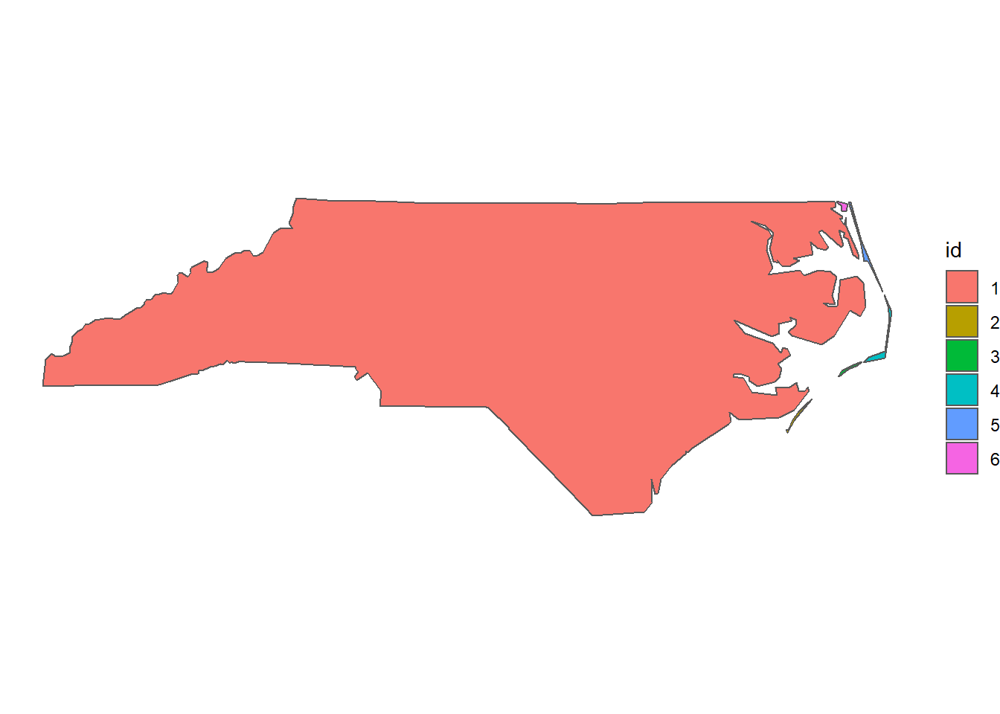

5.2 Overlay Toolset
5.2.1 Merge
Let’s assume in the example below that instead of having four individual areas of interest, we are interested in having one common, unified area on which we focus our analysis. In other words, we have to merge the existing four areas into one. In ArcGIS pro the respective tools for this action is either the Merge or the Dissolve tool.
In R on the other hand, this can be easily performed using the st_union function in the sf package.
## Simple feature collection with 12 features and 22 fields (with 5 geometries empty)
## geometry type: MULTIPOLYGON
## dimension: XYZ
## bbox: xmin: 2620698 ymin: 1193269 xmax: 2768769 ymax: 1283504
## z_range: zmin: 260.666 zmax: 3246.858
## projected CRS: CH1903+ / LV95
## First 10 features:
## uuid datum_aend datum_erst erstellung
## 6 {05D55405-466B-4ECC-83C7-A906DEB0D607} 2017-12-04 2012-10-26 2012
## 7 {FB7105B8-6D7C-4787-846E-17B2BC145C6E} 2018-11-22 2012-10-26 2012
## 10 {E11CD2CA-2E2D-415C-8789-C10D7C26E441} 2016-12-09 2012-10-26 2012
## 12 {87370D3F-DBBE-4D05-AF85-C358C3924B3D} 2018-11-22 2012-10-26 2012
## 41 {99488953-65F6-4F86-8606-337113587F85} 2015-12-08 2012-10-26 2012
## 47 {F1A07951-AC8B-4EBA-B48F-64BC8B92228C} 2015-12-08 2012-10-26 2012
## 48 {784EB478-2D40-4620-80F8-ACC252A6FD02} 2015-12-08 2012-10-26 2012
## NA <NA> <NA> <NA> NA
## NA.1 <NA> <NA> <NA> NA
## NA.2 <NA> <NA> <NA> NA
## erstellu_1 revision_j revision_m grund_aend herkunft herkunft_j herkunft_m
## 6 10 2019 1 400 100 2018 1
## 7 10 2019 1 400 500 2019 1
## 10 10 2019 1 400 100 2017 1
## 12 10 2019 1 400 500 2019 1
## 41 10 2019 1 400 500 2015 12
## 47 10 2019 1 400 500 2015 12
## 48 10 2019 1 400 500 2015 12
## NA NA NA NA NA NA NA NA
## NA.1 NA NA NA NA NA NA NA
## NA.2 NA NA NA NA NA NA NA
## objektart kantonsnum see_flaech revision_q kantonsfla kanton_tei
## 6 0 17 7720 2018_Aufbau 202820 1
## 7 0 1 6811 2018_Aufbau 172894 0
## 10 0 19 870 2018_Aufbau 140380 1
## 12 0 20 13121 2018_Aufbau 99433 1
## 41 0 20 0 2018_Aufbau 0 2
## 47 0 17 0 2018_Aufbau 0 2
## 48 0 19 0 2018_Aufbau 0 2
## NA NA NA NA <NA> NA NA
## NA.1 NA NA NA <NA> NA NA
## NA.2 NA NA NA <NA> NA NA
## name icc einwohnerz Shape_Leng Shape_Area
## 6 St. Gallen CH 504686 494074.195 2.028094e+09
## 7 Zürich CH 1504346 312972.523 1.728942e+09
## 10 Aargau CH 670988 328943.352 1.403783e+09
## 12 Thurgau CH 273801 287778.920 9.905920e+08
## 41 Thurgau CH 0 8640.269 3.737271e+06
## 47 St. Gallen CH 0 1481.811 1.054068e+05
## 48 Aargau CH 0 537.994 1.486573e+04
## NA <NA> <NA> NA NA NA
## NA.1 <NA> <NA> NA NA NA
## NA.2 <NA> <NA> NA NA NA
## geometry
## 6 MULTIPOLYGON Z (((2703763 1...
## 7 MULTIPOLYGON Z (((2673542 1...
## 10 MULTIPOLYGON Z (((2673542 1...
## 12 MULTIPOLYGON Z (((2701937 1...
## 41 MULTIPOLYGON Z (((2751489 1...
## 47 MULTIPOLYGON Z (((2744263 1...
## 48 MULTIPOLYGON Z (((2675447 1...
## NA MULTIPOLYGON Z EMPTY
## NA.1 MULTIPOLYGON Z EMPTY
## NA.2 MULTIPOLYGON Z EMPTY- Plot the merged area of interest

The operation above produces the same outcome as the one depicted in the figure below 5.2.
Figure 5.2: Dissolve operation in ArcGIS pro
5.2.2 Erase
5.2.3 Union
5.2.4 Symmetrical Difference
5.2.5 Spatial Join
§ Say you have two datasets:
library(sf)
library(tidyverse)
zweitwohnung <- read_sf("sample_data/other/zweitwohnung_gemeinden.gpkg") %>%
dplyr::filter(kanton == "Valais / Wallis") %>%
select(NAME)
bbox <- st_bbox(zweitwohnung) %>% st_as_sfc()
points <- st_sample(bbox,500)
ggplot(zweitwohnung) + geom_sf() + geom_sf(data = points)In R, the function used to join two datastes is st_join(x,y). If you have to different data types (e.g. Points and Polygons) the first question you have to ask yourself is: what data type should the output be? The datatype of x determins what the output datatype is.
So with the above data: Say for each point, we want to know the Name (NAME) of the “Geimeinde” in which it lies. This means the output is a point dataset. We therefore write:
Note that points not located in a Gemeinde get the value NA. You have to specify the spatial relationship of your join method within the argument join =. This argument take a so called spatial predicate function. From the join_methods available in ArcGIS, here’s the equivalant spatial predicate function:
| ArcGIS Term | R Spatial Predicate |
|---|---|
| Intersect | st_intersect |
| Intersect 3D | (1) |
| Within a distance | st_is_within_distance |
| Within a distance geodesic | ?? |
| Within a distance 3D | (1) |
| Contains | st_contains |
| Completely contains | st_contains_properly? |
| Contains clementini | ?? |
| Within | st_within |
| Completely within | |
| Within clementini | ?? |
| Are identical to | st_equals? |
| boundry touches | st_touches |
| Share a line segment | |
| Have their center in | |
| Closest | st_nearest_feature? |
| Closest geodesic | ?? |
- All binary predicates only work on 2D Objects (see this issue)